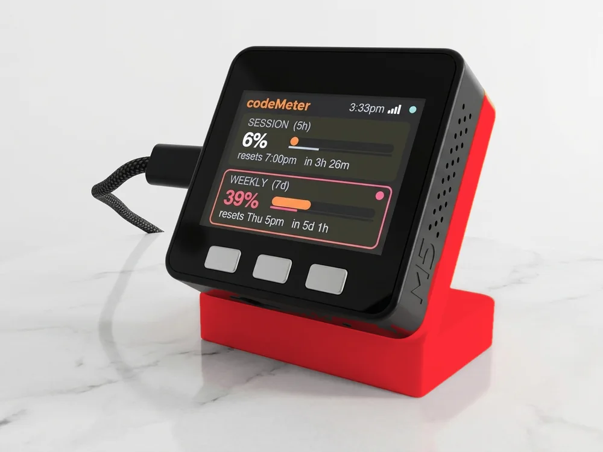

College Basketball (M) · Basketball
Colorado State Rams basketball, live on your desk.
The record, the next game and the live score, in Colorado St colours. Follow the Colorado State Rams alone or with up to five other teams.

The screen fills in with the real record and next game when the scores feed loads.
On the screen
What it shows for the Colorado State Rams.
- The season so far
Colorado State Rams's College Basketball (M) record and place in the standings, under the logo. The title bar reads Colorado St and your local time.
- The next game
Opponent, tip-off time in your time zone and TV. On game day the card lights up in Colorado St colours.
- Live games
The score with the clock and period. The game takes over the screen until it ends.
- The numbers
Win or loss streak, points for and against, home and away records.
Set up
Set it up for Colorado St in a minute.
No app, no account, no subscription.
- 1Plug it in
Scan the code on the screen to join its Wi-Fi. The setup page opens.
- 2Pick your Wi-Fi
Choose your home network and enter the password. It needs 2.4 GHz.
- 3Choose Colorado State Rams
League: College BB. Team: Colorado State Rams. Add up to five more, then Save.
FAQ
Questions.
Does sportsMeter show Colorado State Rams basketball scores live?
Yes. During a Colorado State Rams game the screen shows the score with the clock and period. It checks every 20 seconds, so it usually trails the action by under a minute.
How do I set it up for the Colorado State Rams?
Plug it in, scan the code on the screen and pick your 2.4 GHz Wi-Fi. Then choose College BB as the league and Colorado State Rams as the team, and Save. No app or account.
Can I follow the Colorado State Rams and other teams?
Yes, up to six teams from any of 16 leagues, for example Cincinnati Bearcats and Clemson Tigers. They take turns every 12 seconds, and a live game takes over. Double tap the left button to stay on one team.
Does it show the Colorado State Rams logo and colours?
Yes. Once online it fetches the team logo and uses its colours (#004c23 and #c8c372). Until the logo arrives it shows CSU on a block of the team colour.
What does it show when the Colorado State Rams are not playing?
The record, place in the standings and the next game with its tip-off time. Between seasons the card reads "No game scheduled" until the next game is on the calendar.